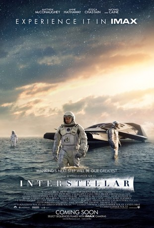

Interstellar (2014)
Interstellar is a science fiction film directed by Christopher Nolan. It follows a group of astronauts who travel through a wormhole in search of a new habitable planet, as Earth faces ecological collapse. The film explores themes of time, gravity, and love across space.
The story follows Cooper, a former NASA pilot turned farmer, who is recruited for a last-chance mission to save humanity. Alongside a team of scientists, he travels through a newly discovered wormhole near Saturn in search of a new habitable planet. Their journey takes them to mysterious and extreme worlds, where time and gravity behave in strange ways — including a planet where one hour equals seven Earth years due to massive gravitational forces.
ack on Earth, Cooper’s daughter Murph grows up and becomes a scientist, working to solve the equations needed to save the remaining population. The emotional connection between father and daughter becomes a central theme, as the film explores the nature of time, love, sacrifice, and human endurance.
Starring:
- Matthew McConaughey
- Anne Hathaway
- Jessica Chastain

Go back to the list
Go back home